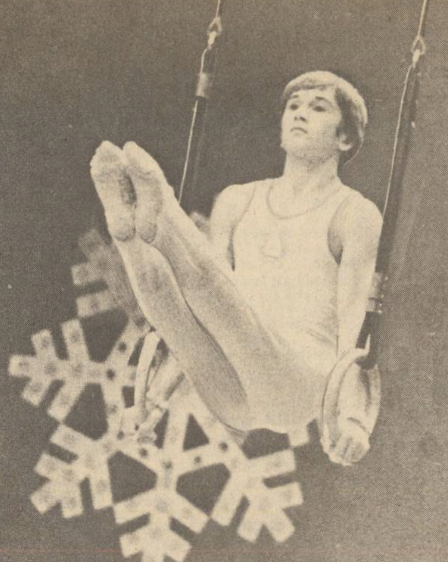

Pavel Sut (USSR)
1981 Chunichi Cup AA Bronze Medalist
Medal Total
World Championships: 1 Gold

Sut was born in 1961 and trained with coach L. Golyandrin at the Red Banner club in Minsk. He married fellow gymnast Natalia Shaposhnikova on May 1, 1982. They have two children: Olga and Paul. The couple owns Gymnastika in Paterson, NJ.
Competition Results
1977
All-Union Youth Championships: 6th AA
Jr. ITA-USSR Dual Meet: 1st Team, 1st AA
Jr. USSR Championships (Candidate): 8th AA
1978
Jr. USSR Championships: 5th AA, 3rd R
Jr. USSR Cup: 5th HB
1979
Jr. Friendship Tournament (Druzhba): 1st Team, 12th AA
Jr. USSR Championships: 6th AA, 2nd PB
1980
Banska Bystrica International: 1st AA
Jr. USSR Championships: 2nd AA
Jr. USSR Cup: 2nd AA, 1st PB, 3rd V, 3rd HB
1981
Chunichi Cup: 3rd AA, 1st PH, 5th R
Ennia Gold Cup: 12th AA, 2nd PH
USSR Championships: 1st Team, 4th AA, 2nd PH, 3rd PB, 3rd HB, 5th R
USSR Cup: 7th AA, 2nd PB, 3rd HB
World Championships: 1st Team, 15th AA (prelims)
1982
USSR Championships: 2nd AA, 3rd HB
1983
Riga International: 5th AA, 1st R, 1st PB
1984
USSR Championships: 5th AA
USSR Cup: 6th AA
1986
Kosice International: 4th AA, 1st R
1987
Kosice International: 3rd AA, 1st R, 3rd PB, 4th PH, 5th HB
This page was created on May 21,
2006 and was last updated on August 30, 2026.
© Gymn Forum